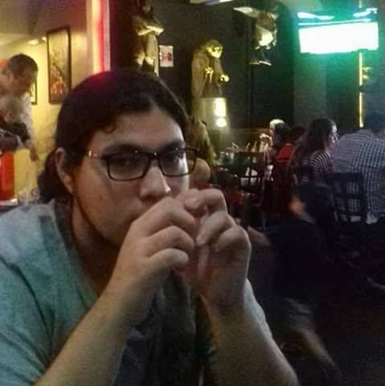

QUIEN SOY
Pues antes que nada mi nombre es Flores Limon Manuel Eduardo, tengo casi el mismo nombre de mi padre (Flores Leyva Manuel Eduardo) lo cual siempre me ha generado mucha gracia ya que lo único diferente son las ultimas 4 letras de nuestro segundo apellido, y me gustaría tener un hijo al cual llamar igual que yo, solo que con el apellido de su madre.
Soy una persona muy reservada respecto a mis asuntos personales, tanto que muchas cosas no las llegan a saber ni mis padres, me molesta mucho exhibir estas cosas, o que alguien provoque que se exhiban. No soy una persona la cual se apasione mucho al pertenecer a un grupo o comunidad, en otras palabras no me enorgullece, por ejemplo la gente suele apasionarse por pertenecer a un grupo de fanáticos de un equipo, o sentirse orgulloso de su nacionalidad, por estar en alguna escuela, por otra parte a mí no me interesan tanto esas cosas, pero en si nunca e sido una persona a la cual le interesen tanto las cosas asique tampoco le tomo tanta importancia.

Yo antes era una persona demasiado seria, a tal punto que prefería no hablar con la gente, era tanto que gente con la que iba en la primaria me dicen que pensaban que yo era mudo hasta que me escucharon hablar. cuando entre a la secundaria no me pude amoldar al estilo de trabajo y varias veces mandaron llamar a mis padres por le echo de que estaba reprobando las materias, con el tiempo ya no reprobaba las materias pero tampoco era de buenas calificaciones, lo cual generaba que siempre compararan las de mi hermana 1 año menor que yo, pero esto nunca me importo para segundo de secundaria ya era un poco más sociable, en el grupo en el que estaba era junto con los buscapleitos de la secundaria, 1 día estaba con 2 amigos y ellos llegaron y empezaron a molestarnos, a uno de mis amigos lo hicieron llorar por lo que procedimos a ir con la sicóloga de la secundaria, la cual se quedó sola junto con el y uno de los que nos molestaban, no supe bien de que hablaron pero al final lo único que hizo fue decir que era culpa de mi amigo ya que los pleitos no empiezan por una sola parte, refiriéndose que si el nos molestaba era porque nosotros nos lo buscÿbamos, ahí fue cuando me di cuenta que no puedes depender de los demás.
Las cosas se calmaron entre nosotros y ellos, ya que a ambos los amenazaron con expulsién si llegaban a tener otro incidente de este tipo. En tercer grado de secundaria a mediados de este, fue cuando conocí lo que era que te gustara alguien, por alguna razón había una chica en mi salón, la cuan yo nunca note que estuviera ahí, con el pasar de los días me gustaba más no sé porque, no le hablaba, no me llevaba con ella, lo único que savia de ella era su nombre porque la mencionaban en la lista, ella y su amiga se dieron cuenta de que yo la miraba entonces ella se empezó a acercar mës a mí, pero yo era muy retraído, casi al salir de la secundaria yo me anime a darle una carta la cual ella contesto con otra, entonces nos estuvimos mandando unas cuantas, al salir de vacaciones la invite a salir, recuerdo que ese día mi madre me regaño y me hizo ponerme ropa la cual no me gustaba, ella jamás me había visto sin uniforme y pensé que la primer impresión que le daría seria que me gustaba la banda, lo cual no quería, paso el tiempo y entre a preparatoria, ahí conocí a mis amigos con los cuales hasta día de hoy seguimos siéndolo.
La primera semana de clases me di cuenta que la chica que me gustaba estaba en la misma preparatoria, entonces me anime a preguntarle si quería ser mi novia, sus palabras fueron "déjame pensarlo" después de eso yo no tenía esperanzas de que aceptara, al final no acepto y yo me deprimí y estuve pensado mucho durante todo el semestre, al volver de vacaciones yo me decidí a no volver a ser ese chico tímido y callado, después de eso no volví a serlo. Eso cambio mucho mi forma de pensar, ya no quería caer de nuevo en eso, ya que me la pasaba mejor con amigos divirtiéndome.
En el último año dicha chica volvió a mi vida ya no como un amor, sino como una amiga, las cosas fueron extrañas durante ese tiempo recuerdo que un día ella me invito a ir a el parque Sinaloa y me regaño por yo siempre traer audífonos y me hizo quitármelos, solo estuvimos platicando al final del día estábamos en una banca y me dijo que me acercara cuando lo hizo ella se acercó pero no de una manera lenta sino que muy rápida su rostro hacia el mío y entonces mi primer beso fue más bien un primer choque de labios, doloroso pero alavés agradable, no nos hicimos novios desde ese momento ya que yo quería pedírselo formalmente y que no lo fuéramos solo por el hecho de besarnos ese día, después de un tiempo sus padres le dijeron que llevara a presentar a su novio a el cumpleaños de su abuela, estos se referían a mí ya que aviamos estado saliendo antes, entonces pues pedí permiso para ir a la casa de la abuela de una amiga como le explicas eso a tus padres siendo que no tienes novia, me preguntaron y pues dije que solo iría porque si a la fiesta, entonces no éramos novios y no nos veríamos hasta ese día, ese mismo día por la mañana yo tenía club de ajedrez junto con mis amigos, entonces lo que hice fue pedirle consejos de que no hacer y cómo ir a lo cual me ayudaron. entonces al llegar a unas calles de ahí quedamos de vernos cerca y ya que tampoco quería ser su novio solo porque sus padres lo dijeran, lo que hice fue pedírselo antes de llegar a la fiesta.
Soy una persona muy reservada respecto a mis asuntos personales, tanto que muchas cosas no las llegan a saber ni mis padres, me molesta mucho exhibir estas cosas, o que alguien provoque que se exhiban. No soy una persona la cual se apasione mucho al pertenecer a un grupo o comunidad, en otras palabras no me enorgullece, por ejemplo la gente suele apasionarse por pertenecer a un grupo de fanáticos de un equipo, o sentirse orgulloso de su nacionalidad, por estar en alguna escuela, por otra parte a mí no me interesan tanto esas cosas, pero en si nunca e sido una persona a la cual le interesen tanto las cosas asique tampoco le tomo tanta importancia.
Las cosas se calmaron entre nosotros y ellos, ya que a ambos los amenazaron con expulsién si llegaban a tener otro incidente de este tipo. En tercer grado de secundaria a mediados de este, fue cuando conocí lo que era que te gustara alguien, por alguna razón había una chica en mi salón, la cuan yo nunca note que estuviera ahí, con el pasar de los días me gustaba más no sé porque, no le hablaba, no me llevaba con ella, lo único que savia de ella era su nombre porque la mencionaban en la lista, ella y su amiga se dieron cuenta de que yo la miraba entonces ella se empezó a acercar mës a mí, pero yo era muy retraído, casi al salir de la secundaria yo me anime a darle una carta la cual ella contesto con otra, entonces nos estuvimos mandando unas cuantas, al salir de vacaciones la invite a salir, recuerdo que ese día mi madre me regaño y me hizo ponerme ropa la cual no me gustaba, ella jamás me había visto sin uniforme y pensé que la primer impresión que le daría seria que me gustaba la banda, lo cual no quería, paso el tiempo y entre a preparatoria, ahí conocí a mis amigos con los cuales hasta día de hoy seguimos siéndolo.
La primera semana de clases me di cuenta que la chica que me gustaba estaba en la misma preparatoria, entonces me anime a preguntarle si quería ser mi novia, sus palabras fueron "déjame pensarlo" después de eso yo no tenía esperanzas de que aceptara, al final no acepto y yo me deprimí y estuve pensado mucho durante todo el semestre, al volver de vacaciones yo me decidí a no volver a ser ese chico tímido y callado, después de eso no volví a serlo. Eso cambio mucho mi forma de pensar, ya no quería caer de nuevo en eso, ya que me la pasaba mejor con amigos divirtiéndome.
En el último año dicha chica volvió a mi vida ya no como un amor, sino como una amiga, las cosas fueron extrañas durante ese tiempo recuerdo que un día ella me invito a ir a el parque Sinaloa y me regaño por yo siempre traer audífonos y me hizo quitármelos, solo estuvimos platicando al final del día estábamos en una banca y me dijo que me acercara cuando lo hizo ella se acercó pero no de una manera lenta sino que muy rápida su rostro hacia el mío y entonces mi primer beso fue más bien un primer choque de labios, doloroso pero alavés agradable, no nos hicimos novios desde ese momento ya que yo quería pedírselo formalmente y que no lo fuéramos solo por el hecho de besarnos ese día, después de un tiempo sus padres le dijeron que llevara a presentar a su novio a el cumpleaños de su abuela, estos se referían a mí ya que aviamos estado saliendo antes, entonces pues pedí permiso para ir a la casa de la abuela de una amiga como le explicas eso a tus padres siendo que no tienes novia, me preguntaron y pues dije que solo iría porque si a la fiesta, entonces no éramos novios y no nos veríamos hasta ese día, ese mismo día por la mañana yo tenía club de ajedrez junto con mis amigos, entonces lo que hice fue pedirle consejos de que no hacer y cómo ir a lo cual me ayudaron. entonces al llegar a unas calles de ahí quedamos de vernos cerca y ya que tampoco quería ser su novio solo porque sus padres lo dijeran, lo que hice fue pedírselo antes de llegar a la fiesta.